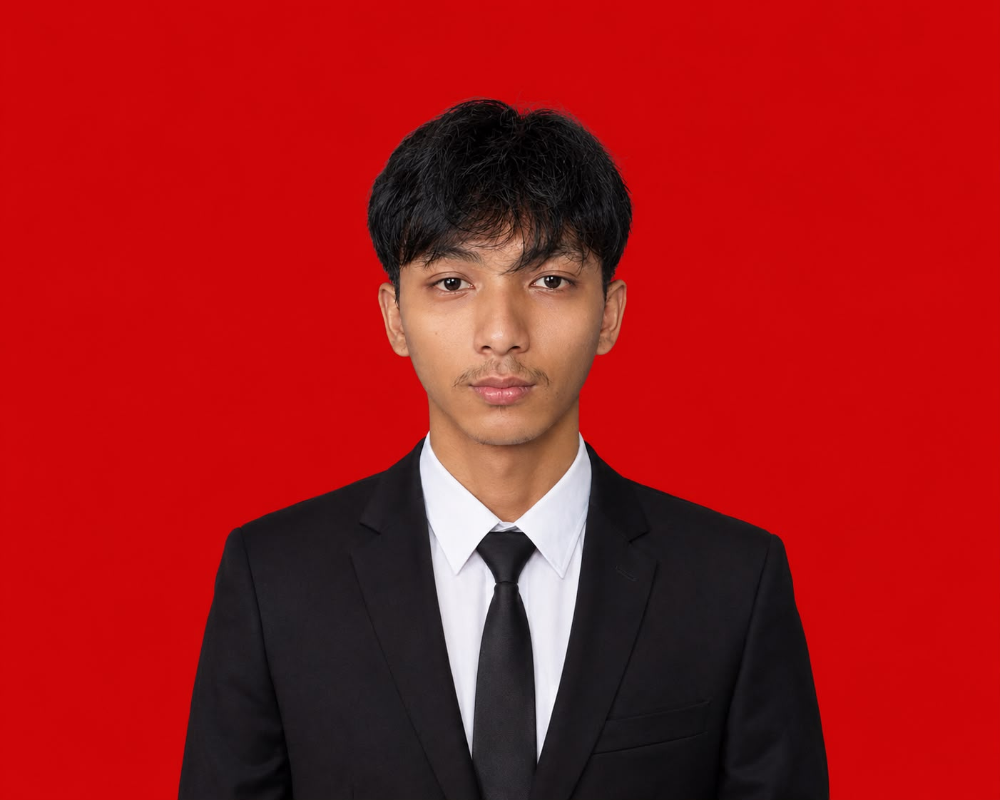
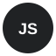
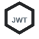

Fullstack Developer / Informatics Engineering Student
Building useful
digital systems.
I work across web, mobile, and APIs — turning real workflows into products that are easier to understand and use.

Not just interfaces.
The whole flow.
I am an Informatics Engineering student at Universitas Buana Perjuangan Karawang. I enjoy working on the parts of a product that connect people, data, and daily operations.
My projects include a cafe POS, procurement platforms, a local cafe directory, mobile tools, a finance tracker, and an accessible learning concept.
A practical
toolkit.
Skills shaped by building complete project flows, not collecting logos.
Languages

Node.jsWeb & Mobile
Data & API

JWTTools
Work with a
reason behind it.
Each record opens its problem, contribution, and technical context.
Casher & Owner
One system for cafe transactions, sales monitoring, and owner operations.
Laravel · React · MySQL↗VisuaLearn
Accessible learning experience for Deaf students through transcription and structured summaries.
Figma · HCD · Accessibility↗Coffee Karawang
Local cafe discovery product with filters, reviews, maps, and admin tools.
Next.js · Prisma · Supabase↗ZETA E-Procurement
Procurement workflow covering vendors, tenders, bidding, contracts, and audits.
Laravel · PHP · MySQL · JWT↗Mobile E-Tender
Mobile companion for procurement data and workflow updates.
Ionic · TypeScript · REST API↗E-Procurement API
Backend services for authentication, tenders, bidding, results, and purchase orders.
Laravel · PHP · MySQL↗KeuanganKu
Student finance tracker with monitoring, analytics, reminders, and reports.
Laravel · MySQL · Chart.js↗Hunter-Log
Gym tracker for logging workout progress and building exercise habits.
Ionic · TypeScript · SQLite↗Let’s build something
useful.
Open to internship opportunities and teams that care about clear products, clean systems, and continuous learning.